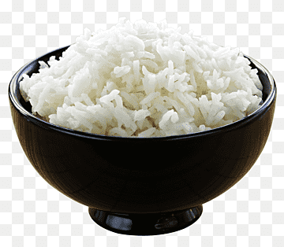

Recipe to make Rice

Description:
Here's a basic recipe to make plain steamed rice:
Ingrediants:
- 1 cup long-grain white rice (such as basmati or jasmine)
- 2 cups water (for cooking)
Steps:
-
Rinse the Rice: Place the rice in a fine-mesh sieve and rinse it under
cold water until the water runs clear. This helps remove excess starch
and prevents the rice from becoming too sticky.
-
Combine Rice and Water: In a medium saucepan, combine the rinsed rice
and 2 cups of water. You can add a pinch of salt if desired, though this
is optional.
-
Bring to a Boil: Place the saucepan over high heat and bring the water
to a boil.
- Simmer: Once boiling, reduce the heat to low and cover the saucepan with a tight-fitting lid. Let the rice simmer gently for about 15-20 minutes, or until all the water is absorbed and the rice is tender. Avoid stirring the rice during this time to prevent it from becoming sticky.
-
Let it Rest: After cooking, remove the saucepan from the heat and let the rice sit, covered, for about 5 minutes. This allows the steam to redistribute throughout the rice and makes it fluffier.
-
Fluff and Serve: After resting, uncover the saucepan and use a fork to fluff the rice gently. Serve hot as a side dish or as a base for other dishes.